3.2 简历评估模块¶
一、工作流介绍¶
功能：简历评估模块的功能就是接收学生的文件，并基于讲师总结的面试的各类规则，给学生输出简历中存在的问题
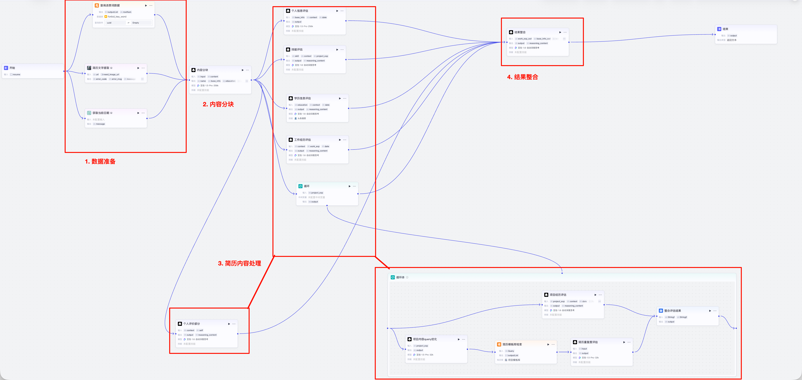
具体步骤如下：
-
输入：简历文档(pdf/doc格式)
-
执行流程：
- 数据准备：基于ORC插件读取简历中的文字内容，同时还需要准备：当前时间，在评估毕业时间等信息的时候结合当前时间；违禁词数据，用于在项目判断中判断是否存在不该出现的词语
- 简历内容分块：把上一步提取出来的简历文字内容进行拆分，分为个人信息、技能、学历、工作经历、项目经历、个人评价几个部分，在后续的处理中分别单独处理
- 简历内容处理：对个人信息、技能、学历、工作经历、项目经历、个人评价部分的简历内容分别单独进行处理，输出各个部分的评估结果
-
内容整合：把每个部分召回的问题进行整合，并输出给学生对应的内容
-
输出：简历中存在的问题对应的Markdown
二、实现数据准备¶
该部分内容如下：
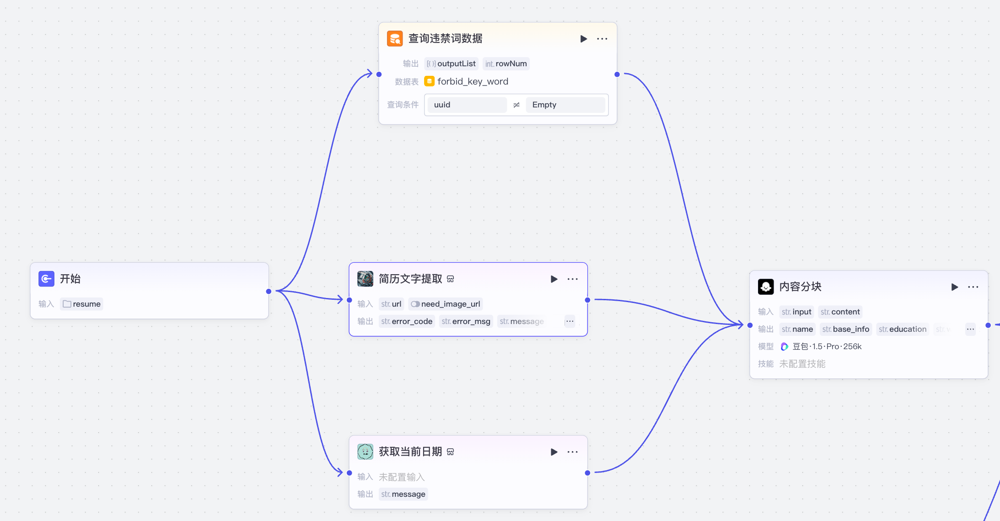
- 开始节点：我们这个流水线整体是围绕着简历修改进行的，所以对于开始节点，我们只需要接收简历即可。剩下的内容工作流自行判断和完成。
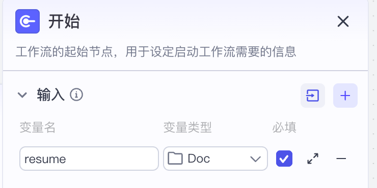
1 使用插件实现文字提取¶
- 简历文字提取节点接收resume作为输入，输出即可。从前面的学习，我们了解到，这里url需要的是str类型的数据，而我们传入的是doc类型。这里coze会把我们上传的doc文件存到一个临时存储中并返回一个url，所以这里的兼容、可执行的。
-
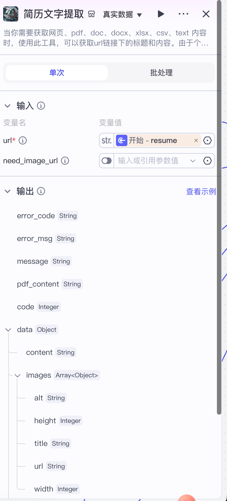
-
对于上传的pdf文件，最终以OCR解析出来后，数据会被存到pdf_content中，我们后面要用的就是这个字段的内容。但是有时候doc的可能会出现在content里，所以这里我们也需要会用到content字段。 这里两个字段只会有一个是有内容的。
2 使用数据库实现违禁词功能¶
这里违禁词为什么使用数据库实现的优势：
- 便于管理：课程内容和经验一直是迭代的，所以违禁词的词库会一直不断地写入新的数据，数据库对增删改查非常擅长。对比修改提示词每次都还要发布流水线，发布智能体，更新数据库直接更新即可，操作便利。
- 支持API操作：违禁词的更新支持API进行，目前我们做的项目是一个coze的智能体，如果后续我们要把简历修改功能集成到内部教学系统中时，在前端操作->调用API会成为一个必然的操作。
- 方便多处使用：违禁词除了在当前流水线中使用，未来也可能会用到一些别的业务中，一份数据库的数据可以被多条流水线引入，且数据都访问到的是同一份，我们只需要维护这一份数据就行。
2.1 创建数据表并录入违禁词¶
- 表结构如下，非常简单，我们只需要知道违禁词的时候有哪些就行了。
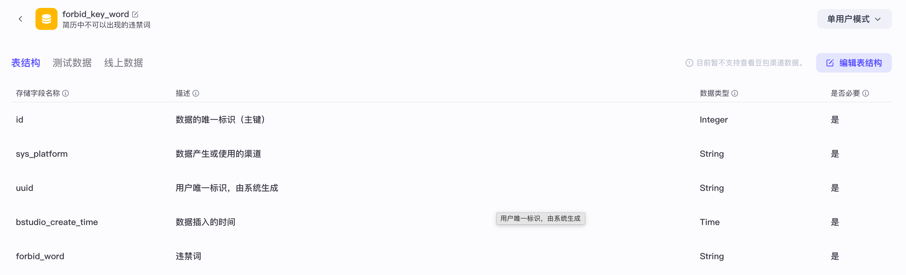
- 把输入导入到测试环境：素材 07-违禁词数据.xlsx ，过程略
-
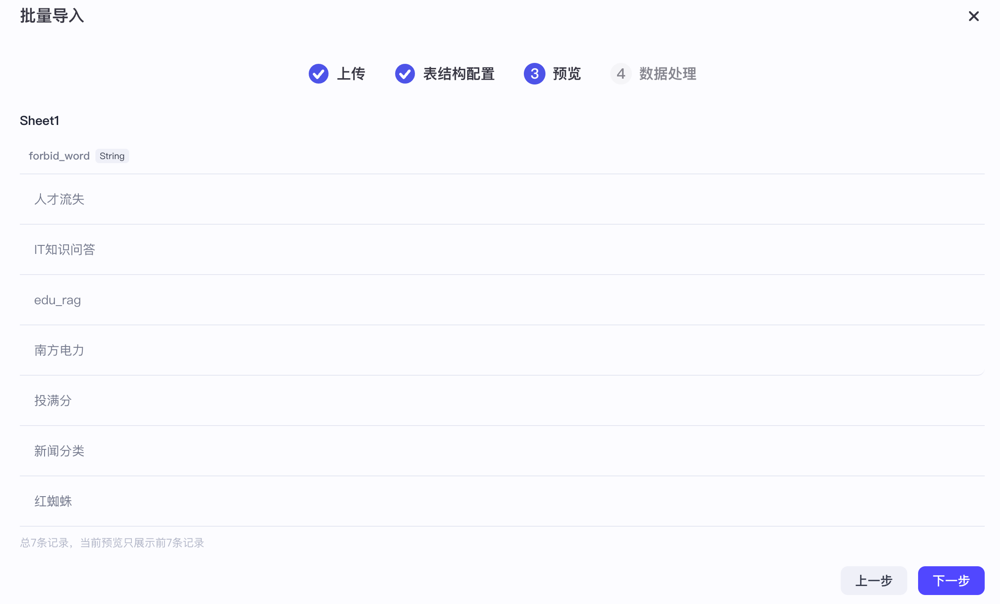
-
至此我们就完成了创建数据库查询节点的工作，这里我们导入的数据是测试环境的，在业务上线时同样的操作，生产环境也需要做一次。
2.2 创建数据库查询节点¶
创建违禁词查询节点，如下图：
- 数据表选择刚才创建的即可
- 查询字段：只需要违禁词即可，其他字段在后续用不上。
- 查询条件：uuid不为空， 因为uuid由系统且不会为空，所以这里相当于是查询出来所有的数据。
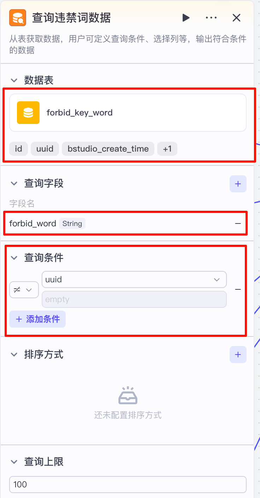
- 最后，输出内容如下图。我们实际用到是outputList，包含所有的违禁词
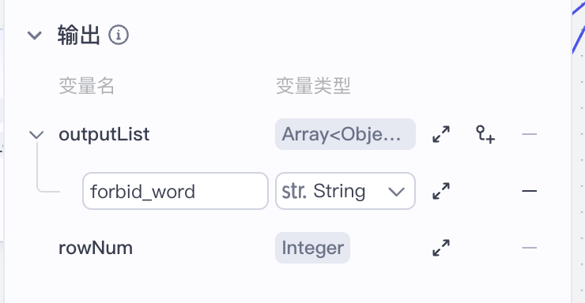
3 获取当前日期¶
- 添加插件，在插件商店中搜索“日期”，如下图，使用“现在时间”这个插件即可实现。 除此之外也有一些别的插件也有类似功能，可自行替换使用。
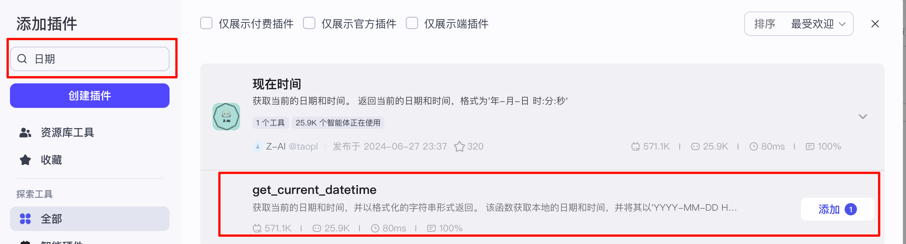
- 可以看到，使用这个插件获取当前时间不需要任何输入，我们只需要接收它的输出message即可。格式是常见的YYYY-MM-DD HH:MM:SS格式， 其实在这里格式不是特别重要，因为后面我们是给大模型来使用的， 只要输出结果没有错误即可。
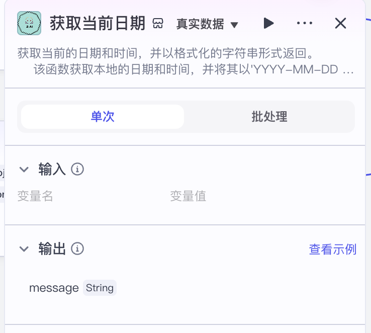
三、实现简历内容分块¶
简历内容分块仅需一个LLM模块即可实现， 虽然流程比较简单，但是这里的提示词的编写非常重要。对后面的任务影响较大。

1 简历内容分块LLM节点¶
- 添加一个LLM节点，首先这里我们选择模型，不再使用默认的豆包1.5Pro32K，而是使用豆包1.5Pro256K。这里是因为32K的上下文能够处理的问题数量有限， 我们需要使用具备使用更大的上下文窗口的能力。确保能处理内容比较多的简历。
- 接下来是模型的输入，因为使用文字提取插件两个字段都有可能输出内容，所以这里我们把两个字段的内容都输入进来进行处理。
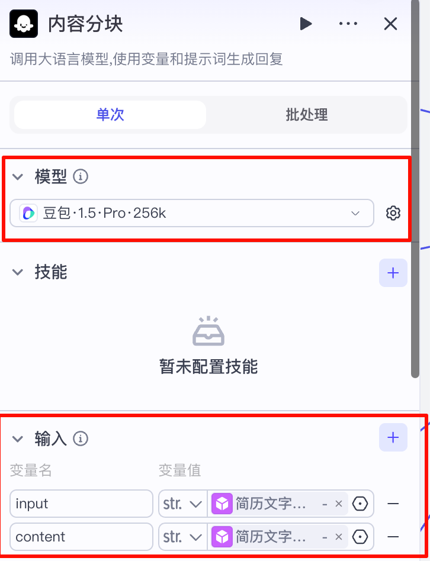
接下来我们给模型输入提示词，首先是系统提示词：
你是一个大模型和算法工程师简历内容提取助手，能够根据简历中的内容提取出来对应的实体。你将接受简历内容作为输入，并按照下列要求进行拆分，并输出为json格式:
姓名：字段名{{name}}
基本信息: 字段名 {base_info}}, 包含个人姓名、求职岗位、期望薪资、工作年限、手机号、邮箱号等基本信息，不包含学历、技能、爱好
个人技能：字段名 {{skill}}, 个人掌握的IT相关的技能
教育经历：字段名 {{education}}， 包含学历、在校时间、专业、是否为计算机专业、以及在简历内容的第几部分
工作经历：字段名 {{work_exp}}, 包括公司、时间、角色，在公司里面从事哪些内容、以及在简历内容的第几部分
项目经验：字段名 {{project_exp}} , 包含简历上所有项目相关的、以及在简历内容的第几部分，每个项目作为数组中的一个元素返回，最后返回一个字符串数组，数组长度和项目数一致
个人爱好、评价：字段名 {{self}}, 包含所有的个人爱好以及软素质评价等部分、以及在简历内容的第几部分
上下文：字段名{{context}}，包含以上所有内容的概括，后续用于分块检验（比如单独校验基本信息、单独校验教育经历）作为参考使用。
注意，以上的要求需要严格遵循，除了上下文以外，其他的内容不要省略和总结，直接拆出来原文即可，不要出现错误的划分
- 首先我们给大模型指定了一个角色，说明它的能力和要做的事情，让模型输出结果更可控和更聚焦。
- 接下来，因为我们要让大模型识别多个部分的内容，为了提高识别的准确度，需要使用few-shot的方式，让模型在提示词中学习如何识别。
- 因为我们要输出的结果是多个字段，所以这里我们字段名要在提示词中指定， 并以{{字段名}}的方式，可以不是{{}}，但一定是需要加符号来分割，强调字段名，减少被误判的可能性。
- 最后，要把注意事项告诉模型，不要擅自该内容， 保证原始内容到分割后的内容的一致性。
用户提示词：
输出部分：
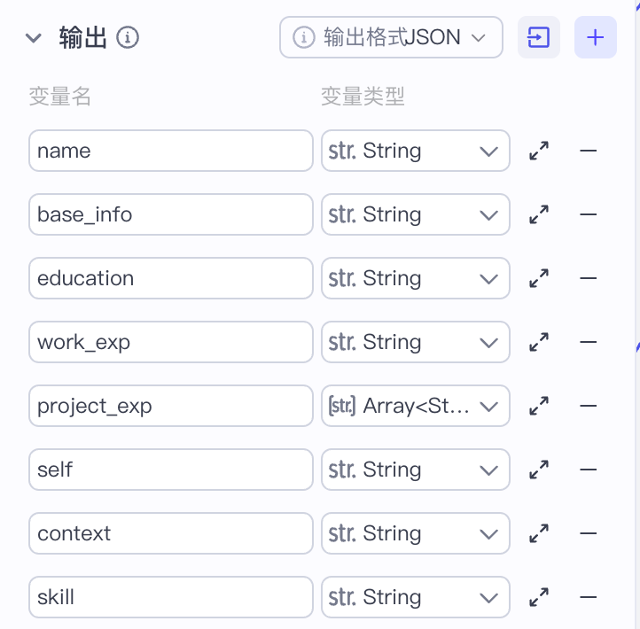
2 拓展：LLM模型的上下文窗口¶
模型的上下文大小（Context Length）直接决定了模型能同时处理多少信息，这就像给AI一个工作台，32K的工作台和256K的工作台，其能同时展开处理的“材料”量是天差地别的。
下面的表格可以让你快速了解两者的核心区别。
如何选择合适的上下文大小：
- 优先考虑32K的情况：对于绝大多数日常应用，如客服机器人、简单的写作辅助、代码补全、分析单篇文档等，32K已经完全足够。它的响应速度通常更快，资源消耗也更低。
- 需要256K的情况：当你需要处理超长文档或进行深度、复杂的多轮交互时，256K就成为必需品。例如，作为研究人员需要让AI模型理解并关联一篇数百页的学术专著中的各个论点；或者作为开发者，希望AI能基于一个完整的大型项目代码库进行代码分析和生成
以下内容了解即可：
| 对比维度 | 32K上下文窗口 | 256K上下文窗口 |
|---|---|---|
| 信息处理量 | 相当于几十页的书或一次中等长度的对话。 | 相当于一本数百页的厚书（如《三体》）、长篇研究报告或极长的对话历史。 |
| 典型应用场景 | 日常问答、短文翻译、简短代码编写、总结单篇文章。 | 深度分析整本书、处理超长技术文档（如完整代码库）、撰写长篇论文、进行极其复杂的多轮对话（如全程记住数小时聊天内容）。 |
| 技术需求与成本 | 相对较低，对计算资源和内存的要求更友好。 | 非常高，需要更优化的模型架构（如MoE）和KV缓存技术来控制显存占用，推理速度也可能更慢。 |
| 举例 | 分析一篇新闻社论的论点和论据。 | 读完一本《百年孤独》，然后让你和它讨论布恩迪亚家族七代人的命运关联和魔幻现实主义手法。 |
四、实现简历内容处理¶
简历内容处理是简历修改模块的核心，所有的评估的逻辑都是在这里实现， 学生拿到的报告也是这里生产。 因此，这个环节的质量对结果有直接影响。
在实现上，每个部分的评估都是并行的，除了项目评估以外，其他都是各通过一个LLM节点实现。 这里对比串行和并行的效率差：
- 串行：一个部分评估结束了，才执行下一个部分的评估。 一共有6个部分的评估，假设每个评估节点都是n秒完成，最后总的执行时间就是6n
- 并行：所有部分评估并行执行，总时间取决于最长的那个评估节点。 如果每个节点都是n秒完成，总时间就是n， 少了5倍的时间。
因为我们每个部分的评估都是互相独立互不干扰的，所以我们这里使用并行加快执行速度。
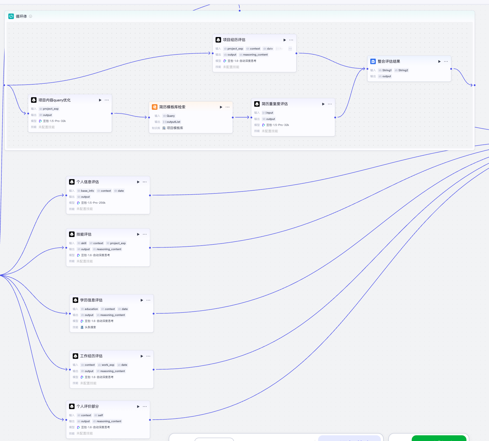
1. 拓展：上下文腐烂¶
在学习简历内容的处理之前，我们先抛出一个问题： 为什么要拆分成不同部分进行并行执行？ 原因可以有以下几个：
- 提示词好维护：拆分以后，每个提示词只需要写对应的部分，互不干扰，方便维护
- 并行加快计算时间：每个部分并行执行，比一个大任务执行时间更短。
以上都对，但并不是核心点，核心是因为为了防止“上下文腐烂”：
上下文腐烂（Context Rot）是一个描述大语言模型（LLM）在处理长文本时出现的性能下降现象的专业术语。简单来说，给模型的上下文信息不是越多越好，当输入长度超过某个限度，模型的理解和回答质量反而会变差
以下内容了解即可：
理解了问题所在，我们就可以采取更聪明的策略来与大模型协作，而不是盲目地将所有信息都塞给它。
- 对于普通用户：在与AI进行长对话或分析长文档时，可以有意识地帮助模型聚焦。
- 关键指令重述：在长对话的中后段，适时地重复最核心的要求和约束条件。
- 分步处理：将复杂的长任务拆解成几个步骤，一步一步地让模型处理，而不是要求它一次性消化所有信息。
- ∙先行摘要：如果有一篇很长的文章，可以先让模型或自己先对文章进行分段摘要，然后基于摘要进行提问。
- ∙对于开发者/AI应用构建者：需要通过系统设计来根本性地解决问题。
- 检索增强生成（RAG）：这是最核心的解决方案。不要将整个知识库塞进上下文，而是先将资料存入向量数据库。当用户提问时，系统先自动检索出与问题最相关的几个信息片段，再将这一小段精准的信息连同问题一起交给模型生成答案。这能极大降低上下文中的噪声36。
- 上下文总结与剪枝：在RAG的基础上，可以先用一个小模型对检索到的内容进行摘要或删除无关部分，再将精华提交给主模型，进一步压缩上下文。∙赋予模型“外部记忆”：可以为AI设计像“笔记本”一样的工具，让它把重要的信息（如多轮对话的摘要、关键决策）记录在外部的存储空间中，需要时再读取，从而解放上下文窗口。
总而言之，面对上下文腐烂，最有效的策略是转变思维：将大模型视为一个强大的信息处理器，而非一个无限容量的记忆库。我们的目标不是一味地扩展上下文窗口，而是通过精心的“上下文工程”，持续为模型提供一份“少而精”的工作指南
有兴趣的同学可以研究一下如何破解：https://zhuanlan.zhihu.com/p/1963677021222725081
2 个人信息评估¶
个人信息评估接收输入： * base_info: 内容分块以后的个人信息部分 * context: 内容分块后的上下文，用于判断和个人信息是否有冲突 * date: 当前时间，用于工作年限等时间相关的信息判断
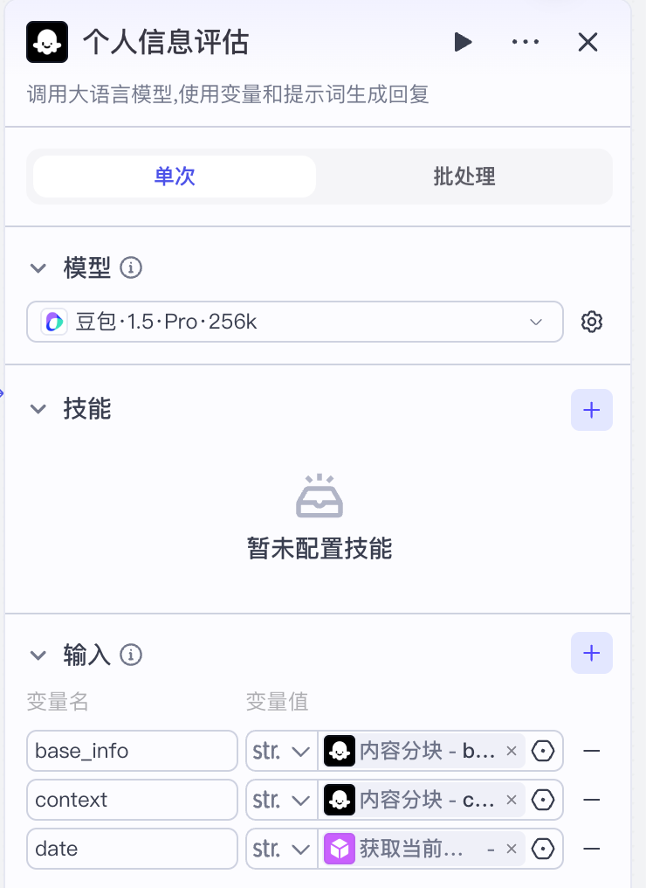
系统提示词：
你是一个大模型和算法工程师简历审核大师，专门负责个人基本信息部分，能够根据输入的个人信息内容基于规则，参考上下文，并判断是否有需要修改的部分。
规则如下：
1. 个人信息中不要包含具体的期望薪资
2. 求职意向不明确：如果上下文里面的项目大部分都是大模型的，求职意向就不要写“算法工程师”
3. 不要使用QQ邮箱，显得不专业
4. 学历非优秀本科不建议意向是算法工程师
5. 需要有手机号、邮箱、年龄，城市，信息完整
6. 工作年限和毕业时间需要对得上， 比如2023年毕业，现在是2025年，最多写3年（1年实习+2年实际工作）
如果违反规则，则需要给用户列出需要修改的部分， 你也可以提出一些建议，但是为了减少，最终返回的格式：
需要修改：需要修改的部分以及怎么修改，需要附带简历原文
参考建议：其他参考建议，这里只能是给个人信息相关的修改建议，控制在3条以内，不得超过需要修改的部分。
用户提示词：
输出：直接输出纯文本即可
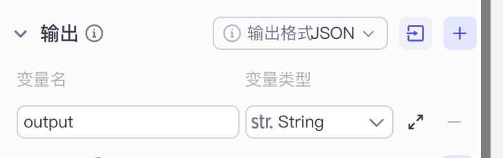
3 技能评估¶
技能评估接收输入：
- skill: 内容分块中的技能部分
- context: 内容分块后的上下文，用于判断和个人信息是否有冲突
- project_exp: 项目经验。 技能应当和项目经验挂钩
因项目评估属于比较复杂的逻辑，需要结合项目经验中的大量文本内容做对比，为提升效果，我们这里使用豆包1.6深度思考模型代替豆包1.5pro
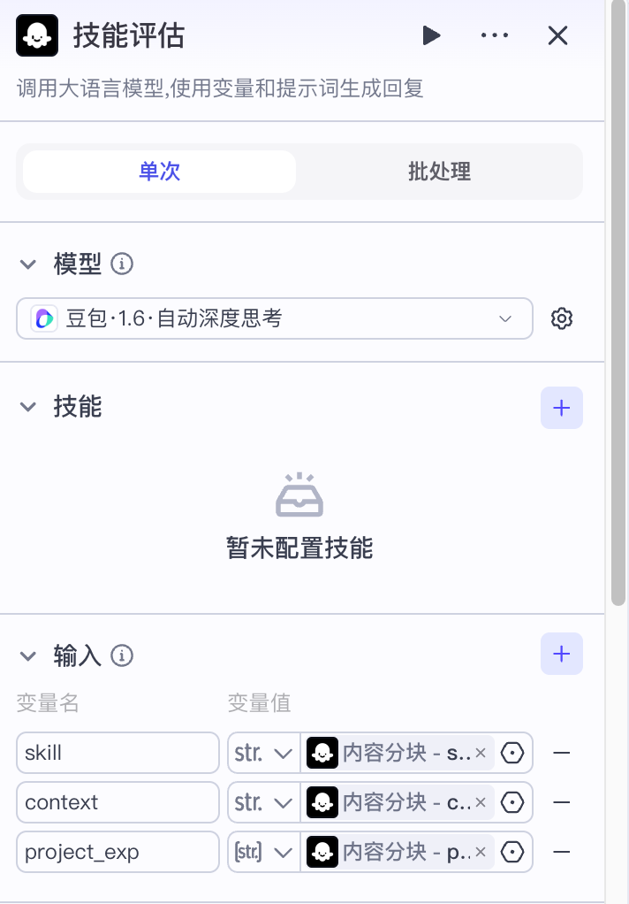
系统提示词：
你是一个大模型和算法工程师简历审核大师，专门负责个人技能部分，能够根据输入的个人技能基于规则，参考上下文，并判断是否有需要修改的部分。
规则，具有最高优先级，需要保证执行到位：
1. 个人技能不要超过12条
2. 个人技能中需要有至少2-3条专门描述大模型技术的，比如RAG、微调（可选，不写也行）、大模型使用相关
3. 每一条中的内容之间需要是相关的，比如： 掌握深度学习的原理，如RNN、LSTM、GRU、Transformer等， 不要一条里面混入多个不相关的
4. 不要写精通，但凡遇到精通的，统统需要去掉。掌握和熟练等不要干涉，候选者自己写就行
5. 如果是转行的，需要注意，还是要体现AI的技术栈，其他方向的少些， 篇幅不超过1/3
6. 技能点要多体现一些技能点，不要概括，因为HR看不懂，把关键词抛出来
7. 项目中出现的技能点，在技能中需要体现关键词。比如milvus出现在了项目中，那么个人技能也得有。项目中没有用到的技术点，需要给用户指出来
8. 技能点里面但凡是熟练、掌握的，在项目内容中要有联系
9. 个人技能所在的位置需要在工作经历和项目经历前面
注意：
1. 只输出技能相关的，不要输出项目相关
2. 技术栈的表述不要过多介入，有关键词即可
3. 没有违反以上规则的内容的部分，不要建议用户删除数据
如果违反规则，则需要给用户列出需要修改的部分，并指出犯了什么错误
用户提示词：
4 学历信息评估¶
学历评估接收输入：
- education: 教育经历
- context：简历总结，作为学历信息评估时的参考
- date：当前日期
为减少大模型的幻觉问题，我们给LLM节点赋予头条搜索的技能，让它能够自动取查询学校相应的信息，并根据系统提示词中的内容对学历信息进行评估。
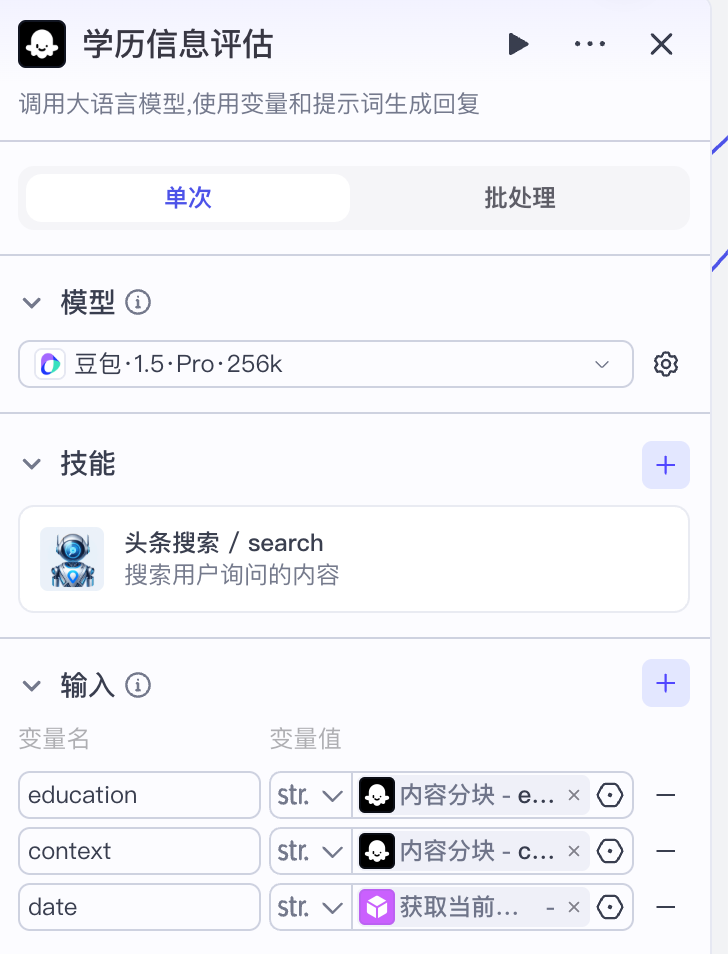
系统提示词：
你是一个大模型和算法工程师简历审核大师，专门负责教育部分，具备联网搜索学生给出的学校的信息的能力，能够根据输入的学历内容基于规则，参考上下文，并判断是否有需要修改的部分。
规则，具有最高优先级，需要保证执行到位：
1. 学历不可造假或者包装，这一条直接在返回的内容中提醒用户： 需要保证学历的真实性，造假会有严重后果
2. 避短，参考上下文工作经历和项目经历的位置， 如果学校是三本甚至专科，建议调整位置，放到后面
3. 扬长，如果学校是计算机专业，且毕业时间在4年以内，可以把相关课程展开写一下，尤其是毕业2年以内的，建议这么做。 如果学校是211或者985，最好标记出来
4. 教育经历和上下文内容不要有冲突
如果违反规则，则需要给用户列出需要修改的部分， 你也可以提出一些建议，但是为了减少，最终返回的格式：
需要修改：需要修改的部分以及怎么修改，需要附带简历原文
参考建议：其他参考建议，这里只能是给学历信息相关的修改建议，控制在3条以内，不得超过需要修改的部分。
用户提示词：
5 工作经历评估¶
工作经历部分接收输入：
- context：简历总结，作为工作经历评估时的参考
- work_exp：工作经历
- date：当前日期
因工作经历评估属于比较复杂的逻辑，我们这里使用豆包1.6深度思考模型代替豆包1.5pro
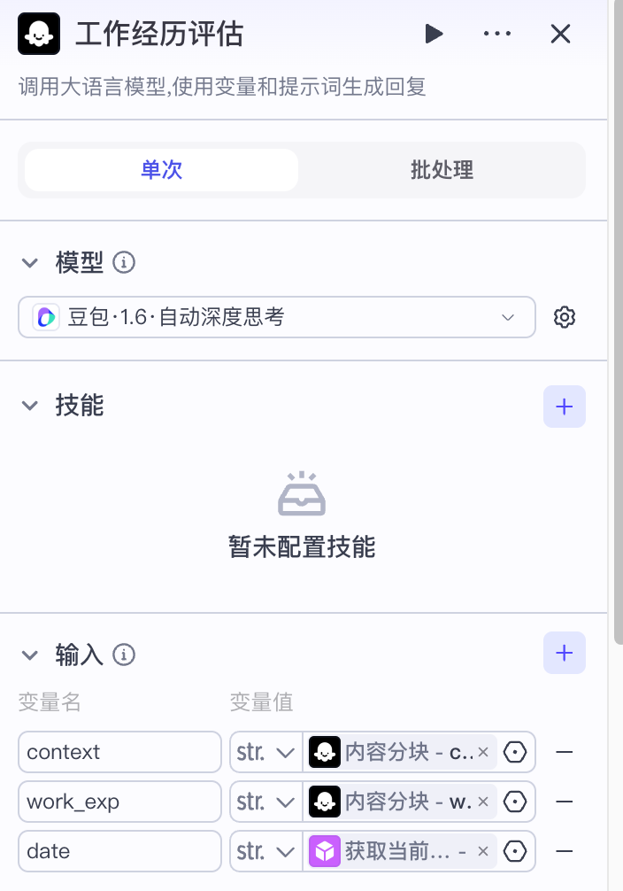
系统提示词：
你是一个大模型和算法工程师简历审核大师，专门负责工作经历部分，能够根据输入的工作经历内容基于规则，参考上下文，并判断是否有需要修改的部分。
规则，具有最高优先级，需要保证执行到位：
1. 每段经历的公司名、工作年限、以及角色必须是完整的
2. 工作经历和项目经历需要分开来写， 工作经历是工作经历，项目是项目
3. 每份工作中的工作内容需要列出来
4. 如果工作经验特别长的， 和AI、大模型无关的篇幅不要太多，控制在一半以内
5. 如果毕业3年以内的，如果实习和实际工作不在一个公司的，建议改成一家公司
6. 工作经历和上下文里面的项目相关的内容不要有冲突
7. 工作经历内容的位置需要在项目经验前面
对于没有内容的，可以简单给一些提示。
如果违反规则，则需要给用户列出需要修改的部分， 你也可以提出一些建议，但是为了减少，最终返回的格式：
需要修改：需要修改的部分以及怎么修改，需要附带简历原文
参考建议：其他参考建议，这里只能是给工作经历信息相关的修改建议，控制在3条以内，不得超过需要修改的部分。
用户提示词：
6 项目经历评估¶
项目部分作为IT行业找工作时最容易提现区分度，也是最需要控制内容的部分，但是实际上做起来并不容易：
- 内容多：项目的文字都是非常多的，并且每个同学写的项目数也不同，有的10年+经验的同学甚至能写5个+项目，对模型的能力有比较高的考验。
- 容易雷同：因为同学们参考的模板都是类似的，且部分同学没有要修改内容的意识或修改不到位，导致雷同率较高。有的同学甚至项目名直接和课程中的项目名保持一致，在用人公司筛选简历时，容易被淘汰。
- 校验项多：对比其他部分的内容，项目中的需要校验的内容更多，实际上也对模型有着比较高的考验
该部分的内容基于一个循环体实现
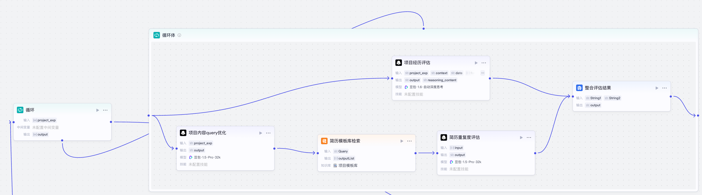
循环体的循环内容如下：
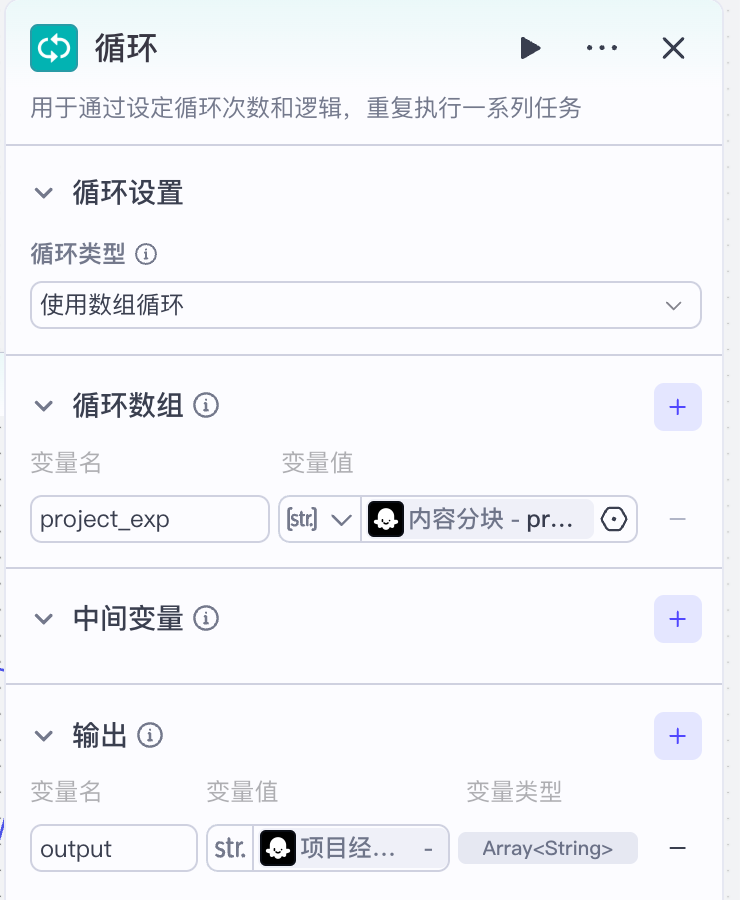
- 循环体接收项目经验数组作为循环条件，遍历数组，并依次处理每个项目的内容评估
- 循环体结束后把处理结果进行汇总，并输出
对于循环体中处理每个项目的内容，主要有两部分逻辑：
- 项目经历评估：基于LLM + prompt ，实现简历内容评估
- 项目重复度评估：基于RAG，和简历内容进行匹配，并评估简历重复度
6.1 项目经历评估¶
项目经历作为循环体中的一部分，每次处理的内容是一个项目的内容，接收输入如下：
- project_exp：循环中一个项目的内容
- context：简历的上下文
- date：当前日期
- forbid_list：违禁词
因项目评估属于比较复杂的逻辑，我们这里使用豆包1.6深度思考模型代替豆包1.5pro。
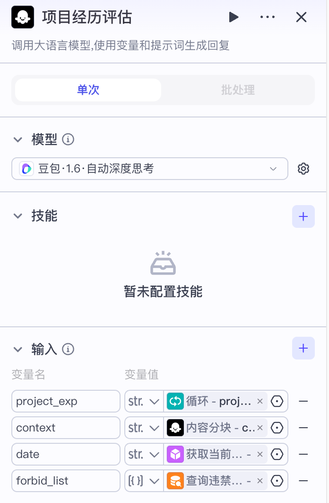
系统提示词：
你是一个大模型和算法工程师简历审核大师，专门负责项目经历部分，能够根据输入的项目经历内容基于规则，参考上下文，并判断是否有需要修改的部分。
规则：
1. 项目数量部分，刚毕业写2个项目即可。， 工作2年（含实习）不能低于3个，3年不要低于4个，无论几年，最好不要超过5个。
2. 工作经历和项目经历需要分开来写， 工作经历是工作经历，项目是项目
3. 每个项目的结构至少需要包含项目介绍（或者背景）、个人负责部分、成果数据，需要分开写
4. 建议在每个项目前面加上技术栈
5. 项目的内容需要强调算法、大模型这些技术，如果是之前做java的等其他方向的，需要缩减篇幅
6. 项目的背景需要合理， 需要是实时在在的需求，描述需要让人觉得这个项目做出来是有价值的而不是编造的
7. 项目中用到的技术点需要合理
8. 实习阶段避免写：精通、主导、负责等字眼，写参与、设计部分小的功能都可以
9. 项目周期需要合理，一般来讲一个小项目的开发需要控制在半年以内，如果超过半年，自己需要想清楚这么久的周期时间上是怎么安排的
10. 禁止出现: {{forbid_list}} 中的单词
11. 对于项目中的个人职责，除了实现项目以外，一般在公司还有技术调研、上线后的维护、迭代、优化等工作
12. 对于每个面试者，都提醒需要准备话术文档（逐字稿）
13. 对于项目中的成果数据，尤其是指标类的，如果有一些不好解释的，需要给用户提醒
14. 项目经历和上下文的内容不要有冲突
15. 技术栈的描述不要写太多
如果违反规则，则需要给用户列出需要修改的部分，以及违反了哪条规则。
- 这里需要注意，10. 禁止出现: {{forbid_list}} 中的单词，这里作为违禁词判断的内容
用户提示词：
最终输出：
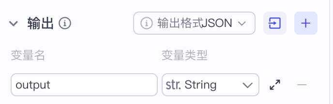
需要注意：这里最终输出内容为json格式，以便循环后合成list后节省字符数（markdown会有很多格式部分）
6.2 项目重复度评估¶
项目重复评估分为3个节点：
- 简历内容query优化：基于简历内容进行优化，不使用整个项目的文本直接去查询知识库。（这里也可以使用大模型按句子进行拆分，然后再后面增加一个循环结构，按句子循环去查询知识库）
- 简历模板检索：去简历模板库中匹配相似的内容
- 简历重复度评估：基于简历模板检索出的结果，结合用户的项目内容进行对比，输出重复的部分的评估结果
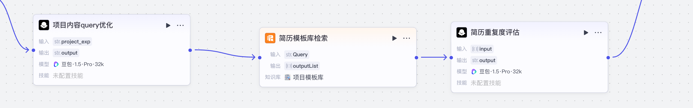
项目内容query优化：
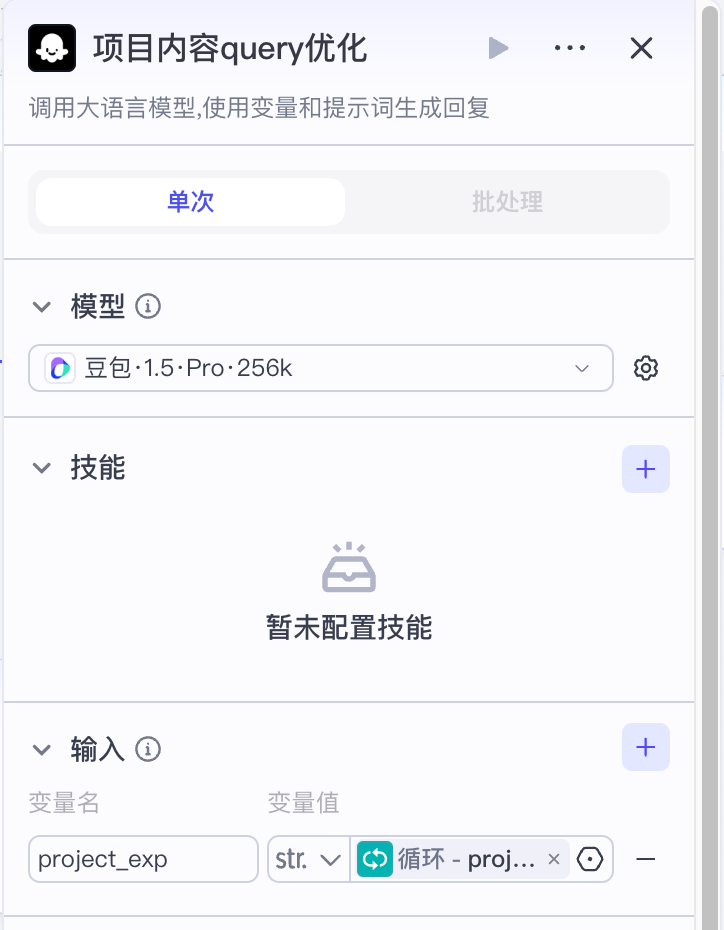
系统提示词：
你是一个大模型和算法工程师简历审核大师，专门负责项目经历部分，能够根据输入的项目内容整合成更易查询的结构。
需要严格执行：
1. 基于输入的内容进行总结或者优化，不可以添加不存在、杜撰的内容。
2. 项目内容根据项目背景、技术点、业务流程、个人职责、优化点、成果数据进行排序，不存在的部分跳过即可。
用户提示词：
简历模板库检索：
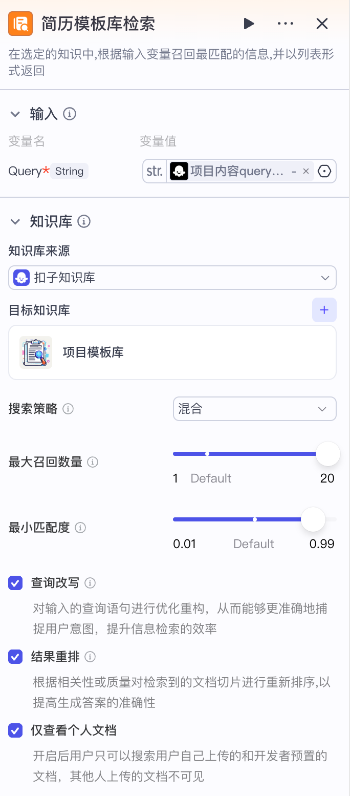
这里需要注意：
- 召回数量给到20，让检索出来的内容更多，增加重复内容部分的召回率
- 最小匹配度的阈值给到0.85，防止检索出来只是小部分内容相同的文档
- 开启查询改写、结果重排，近一步提升检索效果
简历重复度评估：
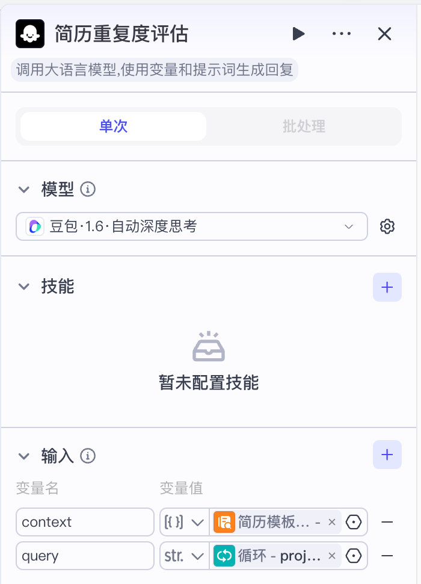
系统提示词：
你是一个大模型和算法工程师简历审核大师，专门负责项目经历部分，能够根据用户输入的项目内容和知识库中检索出来的内容进行对比，并提示用户重合的情况如何。
需要严格执行：
1. 对于雷同的表述，包括技术点、业务流程、个人职责、优化点、成果数据一致或基本相似的，认为是雷同部分
2. 输出内容的时候，需要做对比的部分需要给出哪些部分雷同
用户提示词：
最后，把简历重复度评估和项目经历评估的结果做一个整合：
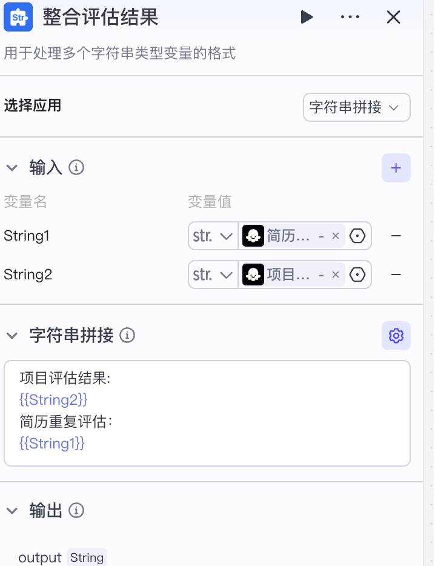
6.3 拓展：分治策略¶
分治策略是一种通过将大规模问题分解为相互独立、结构相同的子问题进行求解的数学方法，其核心思想为“分而治之”。分为以下3个步骤：
-
分解：将原始复杂问题拆分成若干个规模较小、更易解决的子问题。
-
解决：递归地或独立地解决这些子问题。
-
合并：将子问题的解综合起来，得到原始问题的解。
首先，对于我们简历修改模块整体来讲，就是分治策略的一种应用：
| 步骤 | 在简历评估工作流中的体现 |
|---|---|
| 分解 | 将一份完整的简历分解为多个部分（如基本信息、工作经历、项目经验、技能清单、教育背景等）。 |
| 解决 | 针对每个部分，设计专门的提示词或评估模块，交由大模型进行独立、精准的分析和提取。例如，专门用一个模块来深度挖掘工作经历中的职责和成果。 |
| 合并 | 将各个模块的分析结果（如提取出的技能点、项目亮点、工作年限等）汇总、综合，最终形成对这份简历的全面评估和打分。 |
其次，对于“项目经历评估”这个部分，因为大模型一次性处理每个项目的评估，效果会大打折扣，在这里我们同样使用分治策略解决了这个问题。就是把项目整体拆分成多个项目，逐个评估后再把结果汇总。
分治策略不仅体现在软件工程的落地上，也体现在生活中的各行各业中，比如公司的管理就是分治思想的体现：
| 分治思想环节 | 在公司部门管理中的具体体现 |
|---|---|
| 分 (Divide) | 将公司整体战略目标分解为各部门/团队的子目标；按职能（如研发、市场、销售）、产品线、地区等划分组织架构；根据员工专业能力分配任务。 |
| 治 (Conquer) | 各部门/团队在授权范围内，专注于解决自己的核心任务（如市场部负责品牌建设，技术部负责产品开发）；管理者得以深耕专业领域，提升效率。 |
| 合 (Integrate) | 通过管理层会议、跨部门协作机制、统一的财务和信息系统等，确保各部门目标与公司整体战略对齐；将各部门的成果整合为公司的最终产品或服务。 |
我们回到软件行业，除了我们这个章节的工作流以外，常见的算法比如：归并排序、快速排序、二分查找，以及大数据存储、大数据计算都是基于分治思想解决问题的思路。
最后我们说一下，在这里给同学们拓展分治策略的目的，是为了告诉同学们，在搭建工作流解决一个业务问题的时候，要有”分解问题“和”逐个击破”的思想，因为目前的大模型的能力有限，让一个大模型实现一个超出自己能力范围的问题，就容易引发幻觉问题的产生。但是工作流可以添加无数个LLM节点，所以当幻觉出现时，我们第一时间可以去思考，是否可以通过分治策略解决。
7 个人评价评估¶
最后是个人评价评估，这个部分的内容是可选项，有很多应试者没有这部分的内容。接收变量：
- context：简历总结内容，作为参考
- self：个人评价
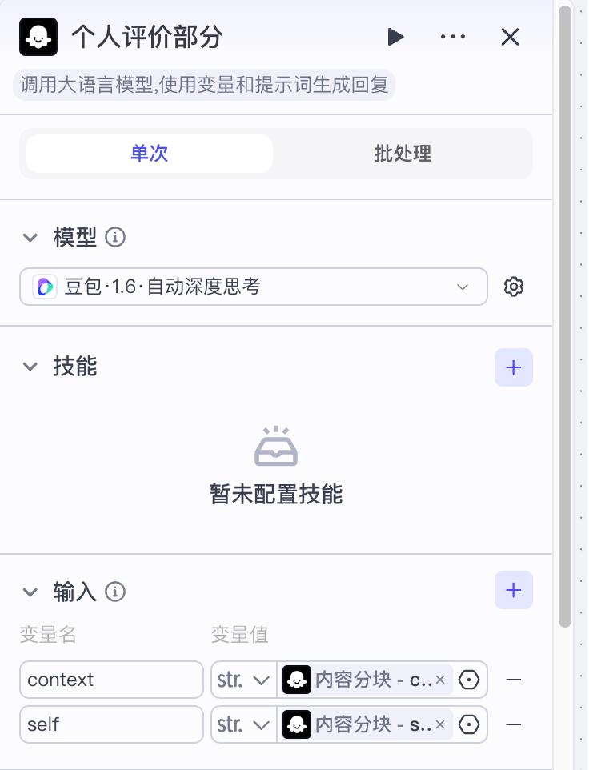
系统提示词：
你是一个大模型和算法工程师简历审核大师，专门负责个人评价和爱好部分，能够根据输入的个人评价和爱好部分基于规则，参考上下文，并判断是否有需要修改的部分。
注意：
1. 如果输入内容没有个人爱好和个人评价，这部分为空的，最后返回空就可以。不需要输出任何内容
规则，具有最高优先级，需要保证执行到位：
1. 个人爱好和评价篇幅不要过多，控制在4行以及以内
2. 个人爱好如果要写的话，写健身等能体现个人优秀品质，比如坚持、身体好等，不要写王者荣耀这类容易留下坏印象的
3. 不要和上下文有冲突
如果违反规则，则需要给用户列出需要修改的部分， 你也可以提出一些建议，但是为了减少，最终返回的格式：
需要修改：需要修改的部分以及怎么修改，需要附带简历原文
参考建议：其他参考建议，这里只能是给项个人评价和爱好部分的修改建议，控制在3条以内，不得超过需要修改的部分。
用户提示词：
五、实现评估结果整合¶
这个节点需要接收以下内容作为输入：
- 工作经历评估结果
- 个人信息评估结果
- 项目经验评估结果
- 自我评价评估结果
- 技能苹果结果
- 学历信息评估结果
同时，为了追求整合的效果更优，我们这里使用豆包1.6深度思考模型
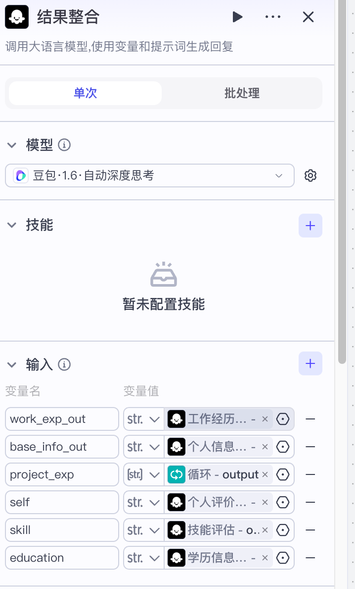
六、工作流调试¶
工作流搭建好后，我们上传一份简历文件，并试运行工作流，最终节点输出如下(输出结果因简历不同以及模型的随机性， 我们这里只截取开头和结尾的部分，中间略)：
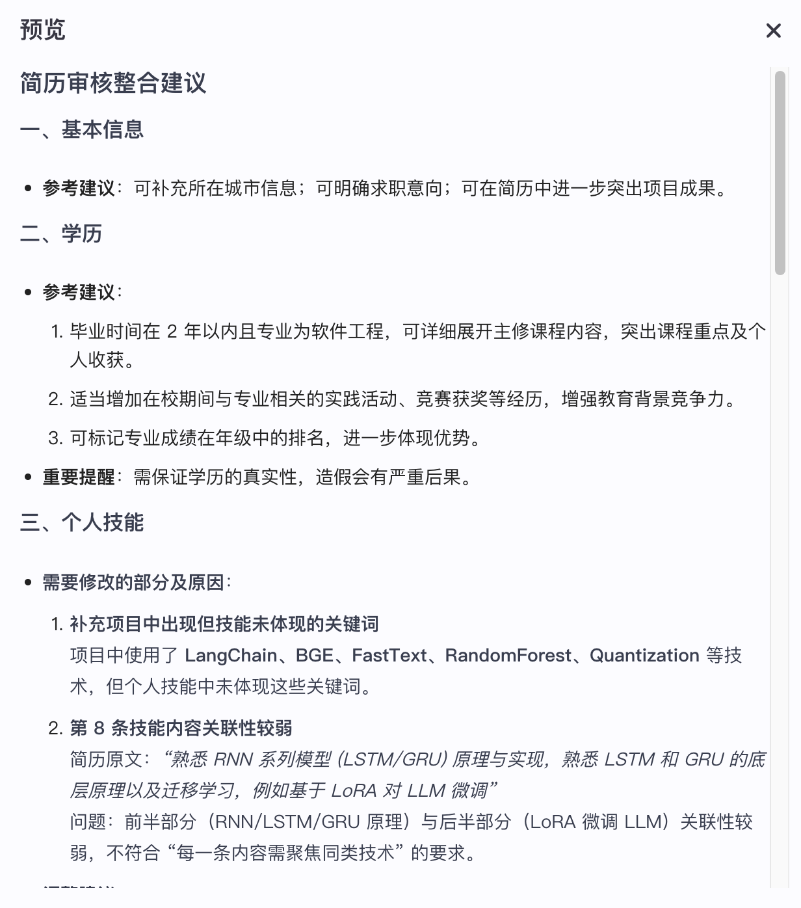
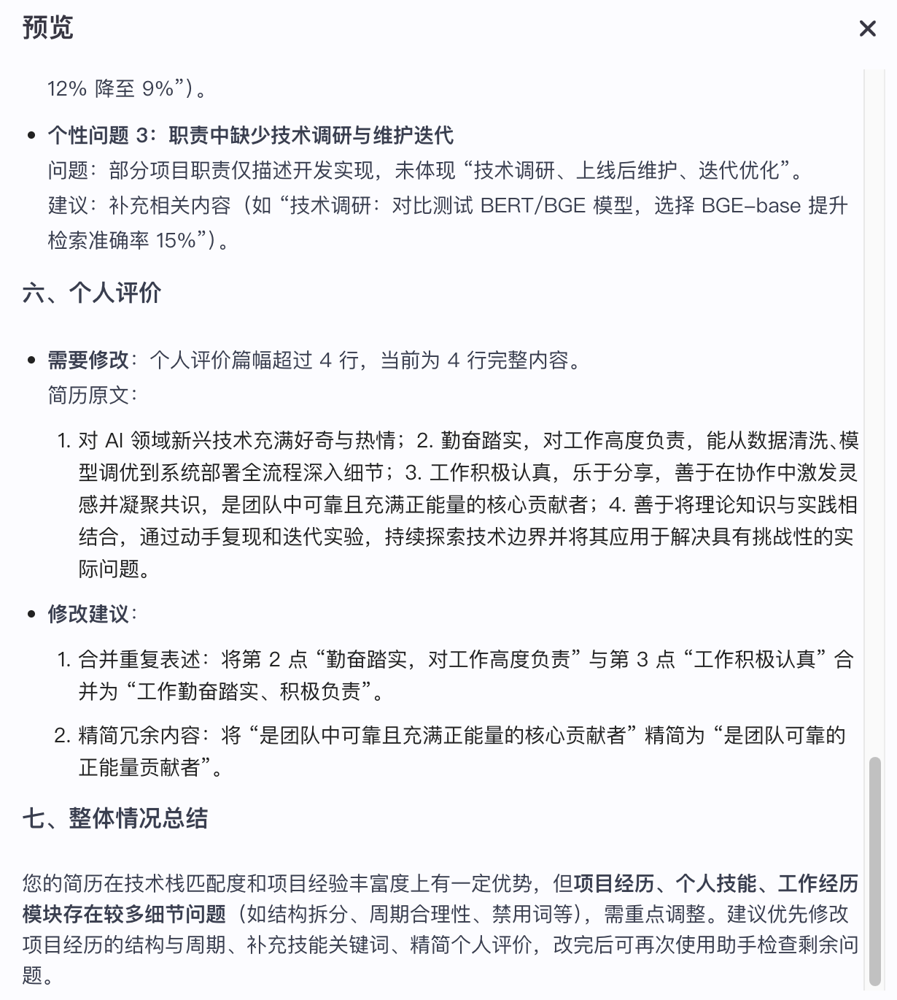
在调试的过程中，运行日志如下：
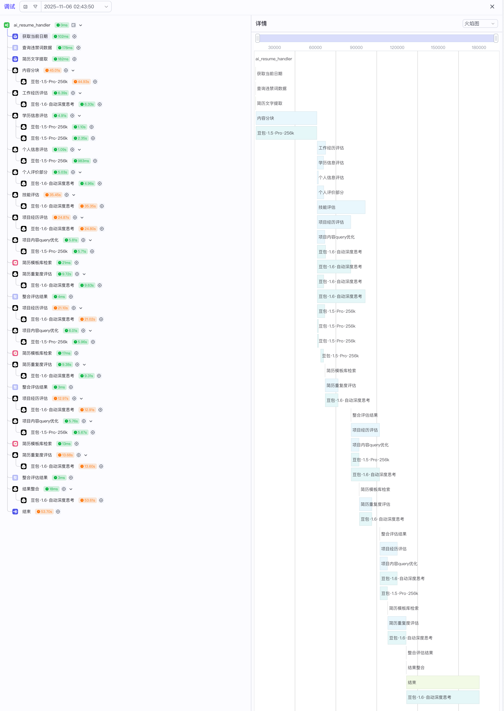
七、总结¶
在实际工作中，开发一个项目往往需要考虑项目收益，以及基于当前实现的不足的优化方向等。
-
收益：项目的收益的衡量一定是来自于开发项目时的需求， 我们这个模块的需求是为了解决面试辅导中的人效问题，那么这个项目衡量收益，一定是围绕着人效的提升。 其他项目也是类似的，比如电商推荐项目是为了提升用户成交，可以使用GMV提升、渠道转化数等指标来衡量； 短视频推荐是为了提升用户的粘性，可以通过用户在线时长增加量等指标来衡量。
-
这里有同学可能会纠结：推荐场景准确率是不是也是收益？ 这里需要跟同学们区分一下， 项目收益和你项目中最终达到的效果是两码事，我们这里提到的项目收益是指的项目在业务层面的收益， 而准确率这类指标是属于技术类的收益，它只能作为一个中间过程的指标。
-
但是在一些纯技术类的项目中，准确率这类指标也是衡量项目收益的指标，比如项目本身就是做一个图片分类算法，客户要求准确率必须达到0.95以上才付费，这个时候准确率就是项目收益完全相关了。准确率就等价于项目的业务收益。
-
优化方向：软件工程的开发往往需要基于目标在 时间、成本、质量上做一个取舍，投入成本和时间越高， 质量往往越好，但是成本和时间不是无限的，在实际工作中，我们需要基于可投入的成本和时间妥协。
-
比如要求两周内实现一个聊天APP，成本3000元，这样的约束下，只能牺牲质量。
- 对于我们本次的项目也是一样，其实有很多优化点在开发的时候是可以做的，但是考虑到时间和成本，最终选择按照本次文档中的实现方式实现。
- 但是一个项目往往不是开发一个版本以后就再也不会迭代了，在项目上线后如果收益是正向的，往往后续还会继续迭代，所以我们在这里列出一些可优化项，如果有有人力（时间）和其他成本投入时，可以进行迭代。具体可参考下面的2 优化方向 部分。
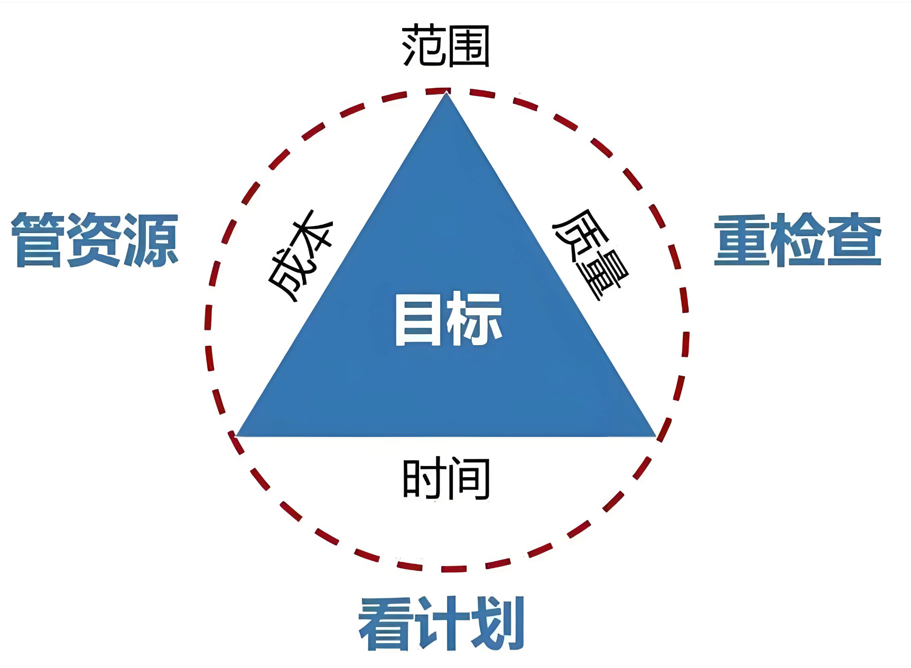
本章节的内容是因为第一次学习项目，让同学们了解项目的收益衡量以及质量和成本之间的平衡等内容，后续模块将不再对这个部分的内容进行过多介绍。原理都是一致的。
1 项目收益¶
- 本模块作为面试助手智能体的第一个模块，也是最重要的功能，基于coze工作流实现了简历评估的功能，效果良好。在一定程度上提升了简历修改的效率，比如：
- 提升学生修改简历的效率：在简历提交之前，学生可通过该功能解决简历中的小错误，减少提交至老师
- 提高老师的效率：班主任和老师在批量收简历的时候可以批量运行，做一次卡点，问题较多的简历打回（批量运行模块我们后续课程会讲到），然后再进行人工审核，可聚焦于发现“高级错误”而非“低级错误”
- 项目的收益可以从以下几个指标进行衡量：
- 调用量：试点班级中，超过70%学生有过调用，平均每个学生调用1.7次。
- 问题召回数：共召回问题240+，平均每个学生4个问题
- 人力节省比：查看一遍简历的时间约20分钟，每次调用可节省老师20分钟时间，共节省老师人力4.25人/天。
2 优化方向¶
- 替换性能更优的模型：目前我们使用的都是豆包模型，可以选择使用qwen-max以及效果更好的其他模型。 （因为模型排名一直是动态变化的，我们在这里无法给一个最好的模型的选择，需要根据当下模型的排名以及经济性和业务需求选择一个合适的）
- 简历查重优化：比如增加存储每个学生的简历，对比其他学生简历和当前学生简历查重等类似功能。 这个可以提升简历查重的效果，但是实现成本会比较高
- 记录调用信息：存储调用过程中的各类信息，比如：项目背景、学历等各类信息，可以帮助教学人员看清楚简历各类信息的分布，有助于分析招聘市场和简历内容之间的gap、课程研发等
- 替换OCR插件：豆包自带的OCR插件效果并没有那么好，对排版比较差或者表格数据的识别能力不足，在实际使用时，可能会导致一些简历识别错误。可以考虑替换更优的付费模型实现内容识别。